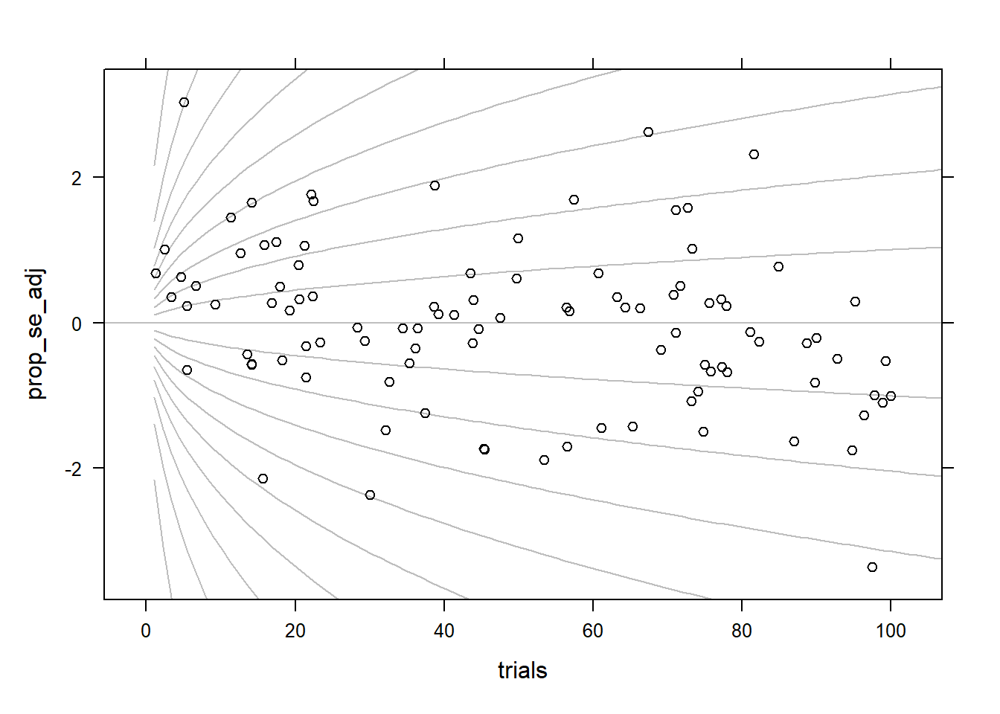

Warning: Paket 'lattice' wurde unter R Version 4.2.3 erstellt
library(here)
Warning: Paket 'here' wurde unter R Version 4.2.3 erstellt
here() starts at C:/Users/ba4rh5/Work Folders/My Files/R projects/_lsoenning.github.io
library(tidyverse)
Warning: Paket 'tidyverse' wurde unter R Version 4.2.3 erstellt
Warning: Paket 'ggplot2' wurde unter R Version 4.2.3 erstellt
Warning: Paket 'tibble' wurde unter R Version 4.2.3 erstellt
Warning: Paket 'tidyr' wurde unter R Version 4.2.3 erstellt
Warning: Paket 'readr' wurde unter R Version 4.2.3 erstellt
Warning: Paket 'purrr' wurde unter R Version 4.2.3 erstellt
Warning: Paket 'dplyr' wurde unter R Version 4.2.3 erstellt
Warning: Paket 'stringr' wurde unter R Version 4.2.3 erstellt
Warning: Paket 'forcats' wurde unter R Version 4.2.3 erstellt
Warning: Paket 'lubridate' wurde unter R Version 4.2.3 erstellt
-- Attaching core tidyverse packages ------------------------ tidyverse 2.0.0 --
v dplyr 1.1.2 v readr 2.1.4
v forcats 1.0.0 v stringr 1.5.0
v ggplot2 3.4.2 v tibble 3.2.1
v lubridate 1.9.2 v tidyr 1.3.0
v purrr 1.0.1
-- Conflicts ------------------------------------------ tidyverse_conflicts() --
x dplyr::filter() masks stats::filter()
x dplyr::lag() masks stats::lag()
i Use the conflicted package (<http://conflicted.r-lib.org/>) to force all conflicts to become errors
Warning in sqrt((prop_steps[i] * (1 - prop_steps[i]))/x): NaNs wurden erzeugt
Warning in sqrt((prop_steps[i] * (1 - prop_steps[i]))/x): NaNs wurden erzeugt
Warning in sqrt((prop_steps[i] * (1 - prop_steps[i]))/x): NaNs wurden erzeugt
Warning in sqrt((prop_steps[i] * (1 - prop_steps[i]))/x): NaNs wurden erzeugt
Warning in sqrt((prop_steps[i] * (1 - prop_steps[i]))/x): NaNs wurden erzeugt
Warning in sqrt((prop_steps[i] * (1 - prop_steps[i]))/x): NaNs wurden erzeugt
Warning in sqrt((prop_steps[i] * (1 - prop_steps[i]))/x): NaNs wurden erzeugt
Warning in sqrt((prop_steps[i] * (1 - prop_steps[i]))/x): NaNs wurden erzeugt
Warning in sqrt((prop_steps[i] * (1 - prop_steps[i]))/x): NaNs wurden erzeugt
Warning in sqrt((prop_steps[i] * (1 - prop_steps[i]))/x): NaNs wurden erzeugt
Warning in sqrt((prop_steps[i] * (1 - prop_steps[i]))/x): NaNs wurden erzeugt
Warning in sqrt((prop_steps[i] * (1 - prop_steps[i]))/x): NaNs wurden erzeugt
Warning in sqrt((prop_steps[i] * (1 - prop_steps[i]))/x): NaNs wurden erzeugt
Warning in sqrt((prop_steps[i] * (1 - prop_steps[i]))/x): NaNs wurden erzeugt
Warning in sqrt((prop_steps[i] * (1 - prop_steps[i]))/x): NaNs wurden erzeugt
Warning in sqrt((prop_steps[i] * (1 - prop_steps[i]))/x): NaNs wurden erzeugt
Warning in sqrt((prop_steps[i] * (1 - prop_steps[i]))/x): NaNs wurden erzeugt
Warning in sqrt((prop_steps[i] * (1 - prop_steps[i]))/x): NaNs wurden erzeugt

Grasshopper data
d <-read.delim(here("posts/2023-01-26_standard_error_sample_size/data", "grasshopper_data.txt"))d$date <-factor(d$date)d$location <-factor(d$location)str(d)
Bin width defaults to 1/30 of the range of the data. Pick better value with
`binwidth`.
d |>ggplot(aes(x = N, y=R/N)) +geom_point()
m <-glm(cbind(R, N-R) ~ location * date, data=d, family="binomial")summary(m)
Call:
glm(formula = cbind(R, N - R) ~ location * date, family = "binomial",
data = d)
Deviance Residuals:
Min 1Q Median 3Q Max
-3.6604 -0.5797 0.0862 1.1706 3.0496
Coefficients: (5 not defined because of singularities)
Estimate Std. Error z value Pr(>|z|)
(Intercept) 0.43078 0.35626 1.209 0.22660
location2 0.81443 0.44125 1.846 0.06493 .
location3 1.54330 0.49073 3.145 0.00166 **
location4 -0.23952 0.51051 -0.469 0.63894
location5 -0.03547 0.42147 -0.084 0.93293
date2 0.98903 0.39388 2.511 0.01204 *
date3 1.49307 0.31743 4.704 2.56e-06 ***
location2:date2 NA NA NA NA
location3:date2 -1.49438 0.55451 -2.695 0.00704 **
location4:date2 NA NA NA NA
location5:date2 -0.16437 0.47618 -0.345 0.72995
location2:date3 -0.76674 0.46939 -1.633 0.10237
location3:date3 NA NA NA NA
location4:date3 NA NA NA NA
location5:date3 NA NA NA NA
---
Signif. codes: 0 '***' 0.001 '**' 0.01 '*' 0.05 '.' 0.1 ' ' 1
(Dispersion parameter for binomial family taken to be 1)
Null deviance: 206.31 on 87 degrees of freedom
Residual deviance: 161.42 on 78 degrees of freedom
AIC: 390.18
Number of Fisher Scoring iterations: 4
anova(m)
Analysis of Deviance Table
Model: binomial, link: logit
Response: cbind(R, N - R)
Terms added sequentially (first to last)
Df Deviance Resid. Df Resid. Dev
NULL 87 206.31
location 4 10.044 83 196.26
date 2 23.110 81 173.15
location:date 3 11.729 78 161.42
car::Anova(m)
Analysis of Deviance Table (Type II tests)
Response: cbind(R, N - R)
LR Chisq Df Pr(>Chisq)
location 11.448 4 0.021967 *
date 23.110 2 9.589e-06 ***
location:date 11.729 3 0.008372 **
---
Signif. codes: 0 '***' 0.001 '**' 0.01 '*' 0.05 '.' 0.1 ' ' 1
xyplot(m$residuals ~ m$fitted.values)
xyplot(m$residuals ~ d$N)
plot(m)
car::residualPlots(m)
Warning in residualPlots.default(model, ...): No possible lack-of-fit tests
### fit equal-effects modelres <-rma(yi, vi, data=dat.hackshaw1998, method="EE")### adjust margins so the space is better usedpar(mar=c(5,4,0,3))### draw radial plotradial(res)
![]()